Round 18: the Needs-you cards' separation
Sebastian's complaint of 1 November 2026: highlighted cards run together. The card flow redesign will show one open case per Needs-you card, with a count of the card's other cases and arrows. This round designs the chrome that face lands in: what parts two cards, and where the count and arrows sit. It is a condensed round built in the lab: the board is the real console's busy board at code commit 1d5d4163, its Needs-you column filled with two, three or five cards of the lab's cases, each in the five parts. No image model ran. Gemini 2.5 Pro and GLM 5V Turbo judged the same sheets. The brief is brief.md and the full account is notes.md.
The recommendation: F, confirmed by Sebastian on 2026-11-03. Each card opens on an amber band behind its head row, ruled off from the case by an amber hairline. The band is the row's own background, 32 px at the least at both widths, and grows when a title wraps. In phase 5 it holds the ref in the amber text colour and the waiting time. The gap between cards grows from 6 px to 12 px. A card with more than one open case ends on the carousel: under a hairline, at the right, the previous arrow, the count 1 of 4 and the next arrow, 44 px targets on the phone. A card with one case shows neither. Today's 3 px amber bar, 4 percent tint and amber-mixed border stay under it. The band marks where each card starts, the gap where it ends, and the arrows come after the case is read. Both critics picked F in the compare loop, 9 of 10.
The runner-up is B: the same band with the count and arrows at its right, and an 8 px gap. The human sees the count before reading. Both critics scored it 7. The critics disagreed on the runner-up: in the first loop both named C, the strong amber frame, and in the compare loop Gemini scored C level with B.
What the lab found first: today's card treatment never renders. Its selector, .lane.five #needs-you > .card, has matched no card since 14 October 2026, when the cards moved into the column's .cards body. The build fixes the selector with the pick.
The entry is C44.
The seam between two cards, before and after
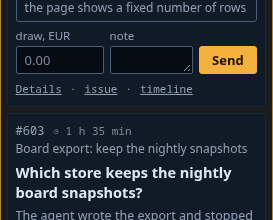
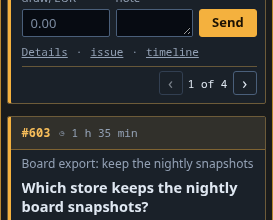
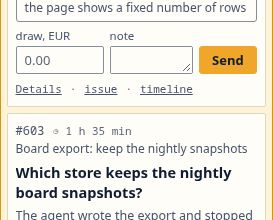
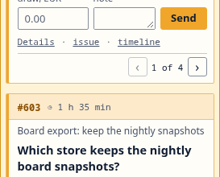
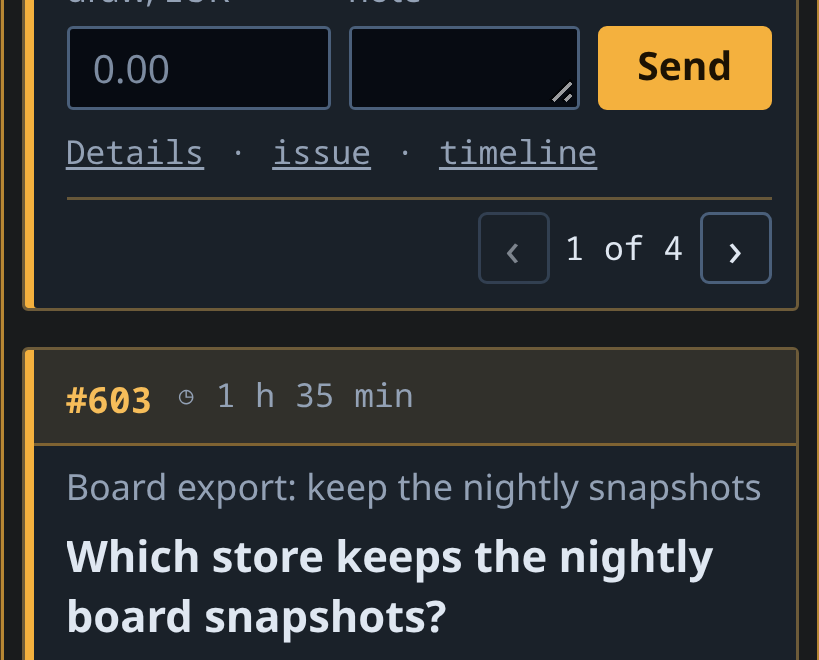
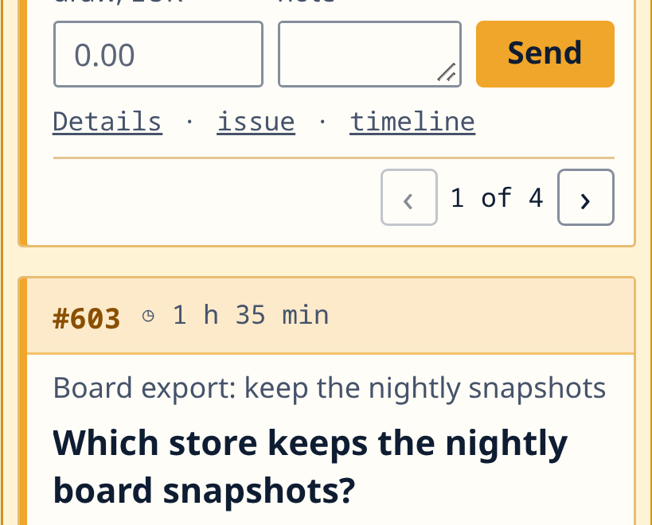
The column, two, three and five cards
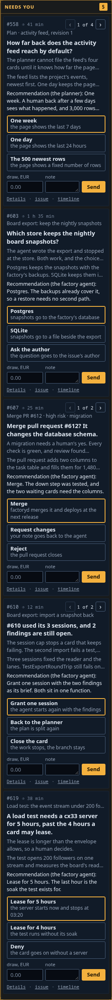
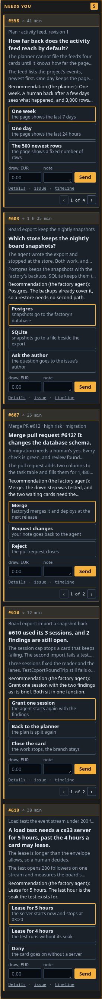
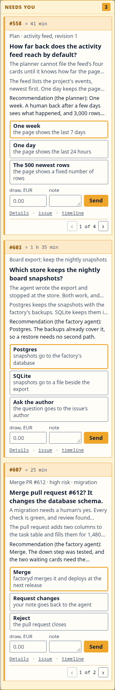
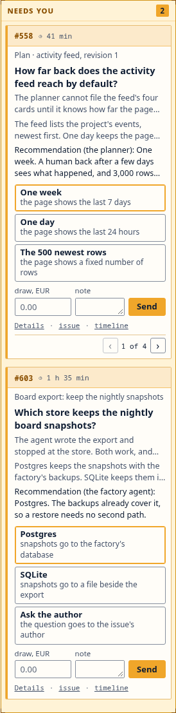
The screen and the phone
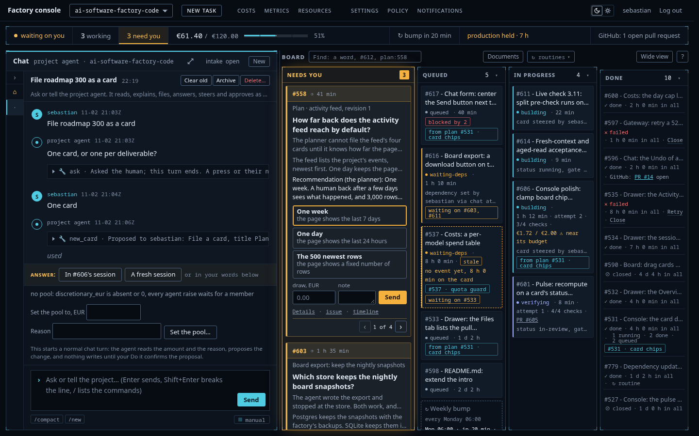
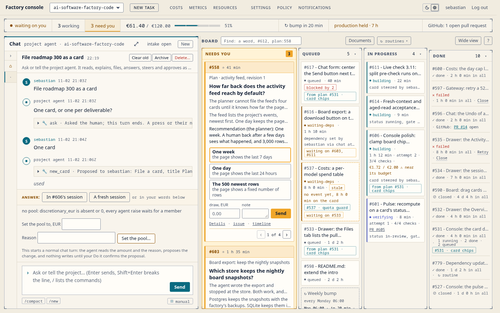
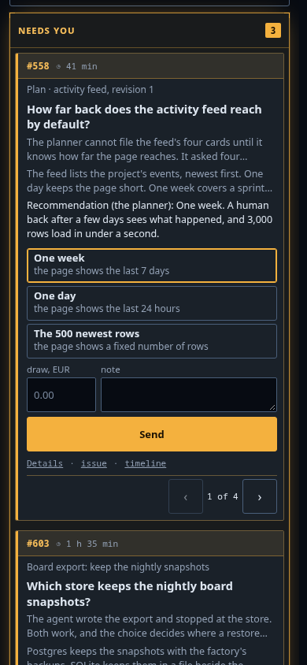
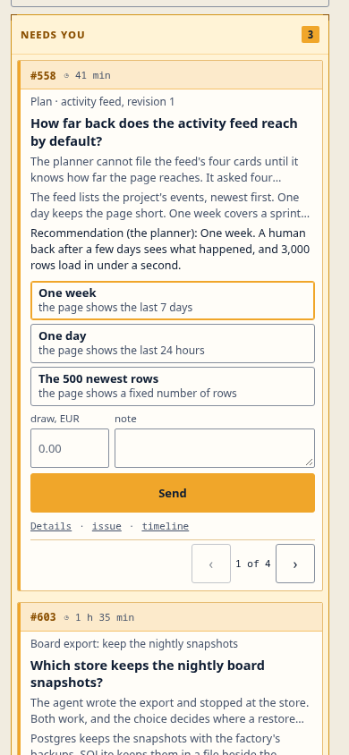
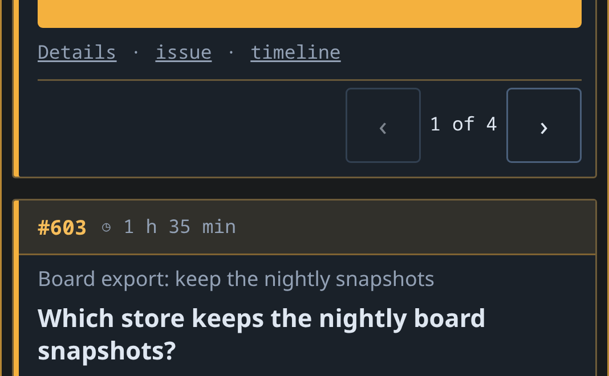
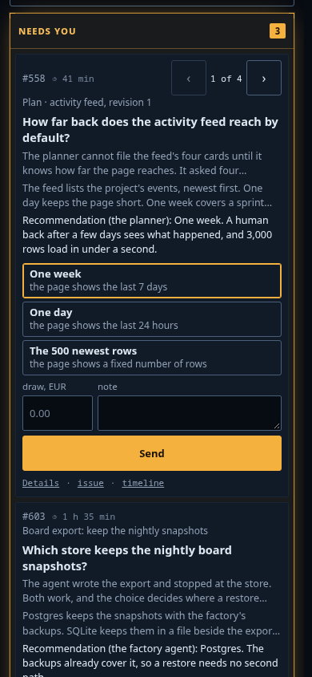
Two of today's cards under F
The build lands before phase 5's face, so the band must hold today's head rows too: .need-top on an approval, the face's first line on an escalation. These are the lab's busy cards as the console renders them and under F, shot by today.js without a critic. Its check found every text box of the head row inside the band in both themes at 1440 and 390: the escalation's band 52 px at 1440 with its title over two lines, the approval's 56 px with its chips and time over two. The approval's headline is 16 px under F.
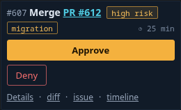
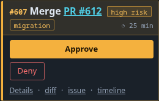
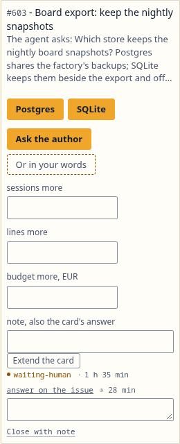
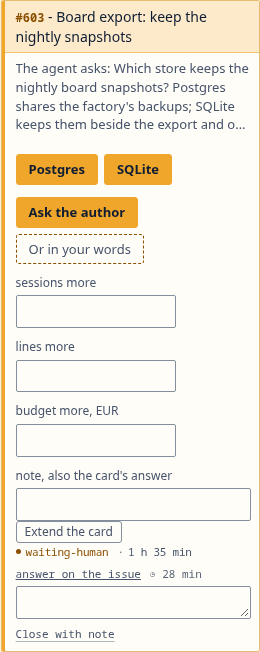
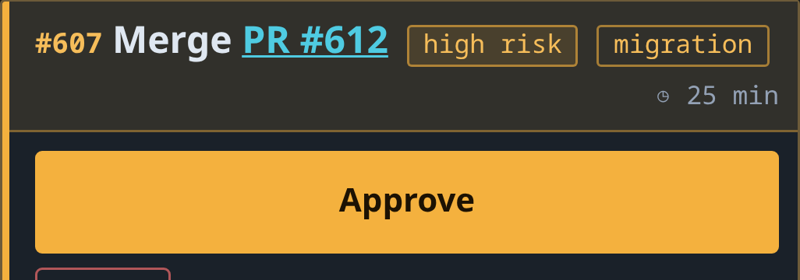
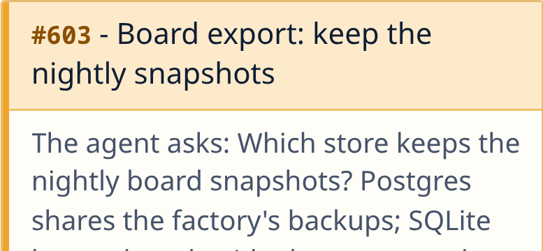
The candidates
| Treatment | What it is | First loop, Gemini / GLM | Compare, Gemini / GLM |
|---|---|---|---|
| base | today's values reaching the cards, gap 6 px | not enough / not enough | |
| A | base with a 16 px gap, the carousel in the head | 1st / 3rd | 6 / 5 |
| B | an amber head band with the ref, the time and the carousel, gap 8 px | 3rd / 1st | 7 / 7 |
| C | a strong amber frame, gap 12 px, the carousel as the last row, arrows at the ends | 2nd / 2nd | 7 / 6 |
| F | B's band, the carousel at the foot as one unit, gap 12 px | 9 / 9 |
F's shots on this page are the pick after the fix round, whose band follows the head row. The critics judged shots/F-judged, whose band was a fixed 32 px and looks the same. Both critics asked in the first loop for the carousel at the foot. Gemini's first ranking put B last on a contrast fault it misread: the band's text measures 7.8:1 and 5.0:1 dark. The claims the director overruled are in notes.md.
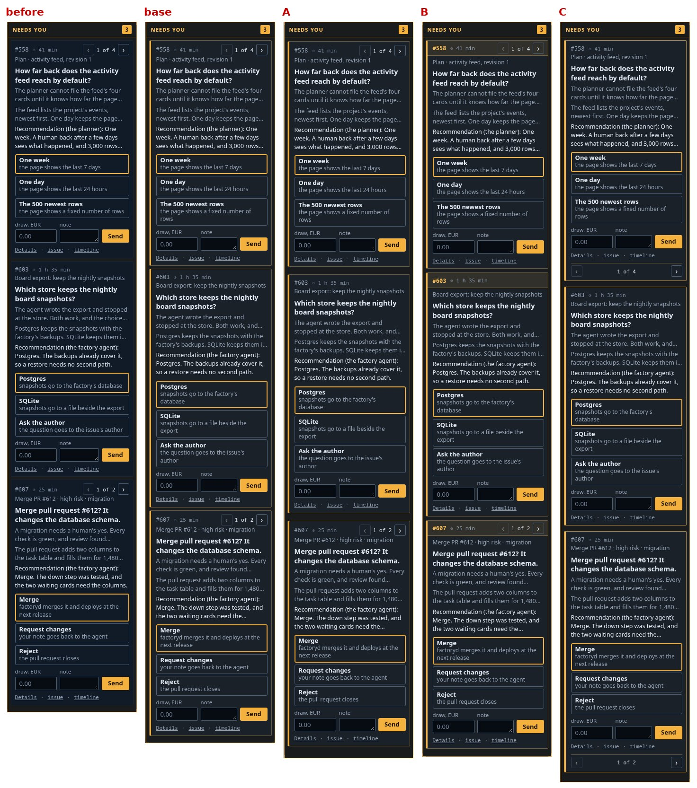
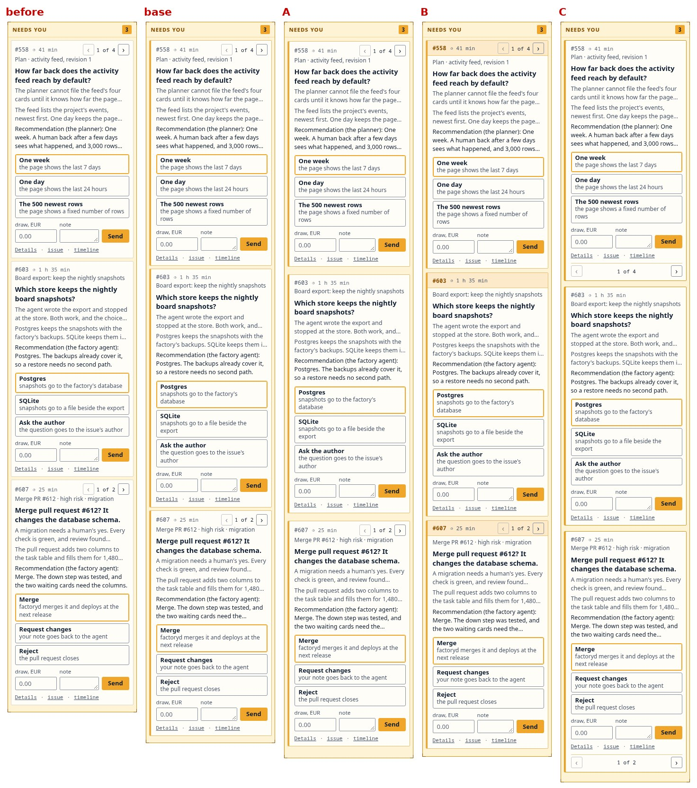
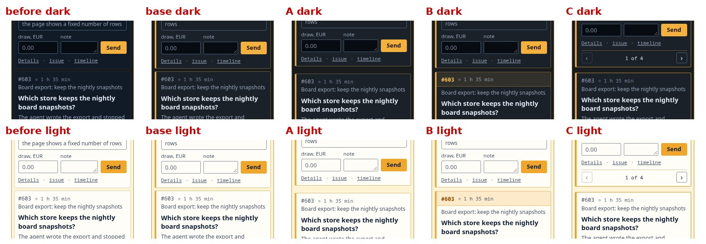
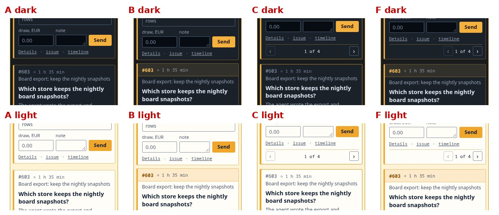
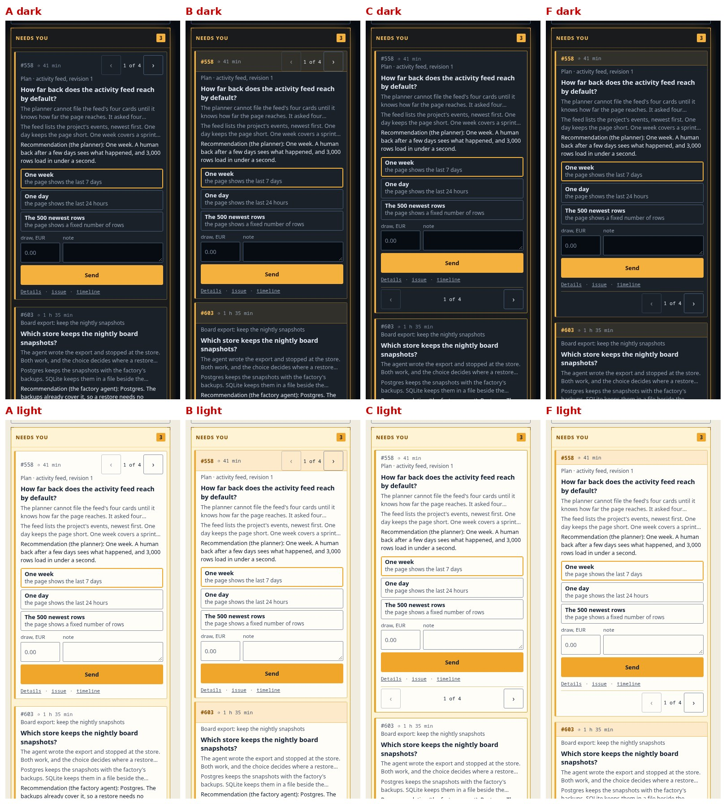
The sheets and the answers
First loop: the prompt, the sheets seam 1x, seam 3x dark, seam 3x light, three cards dark, three cards light, five and two, phone seam, phone, and the answers of Gemini and GLM.


Compare loop: the prompt, the sheets in compare/, and the answers of Gemini and GLM.
The prototype: F with five cards. ?c= takes before, base, A, B, C or F, ?n= 2, 3 or 5, ?theme= dark or light. Four critic calls cost $0.12 of the $3 cap.